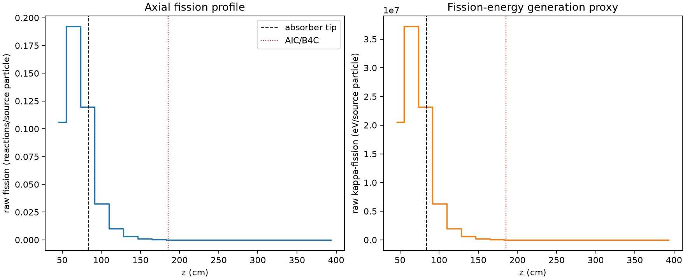
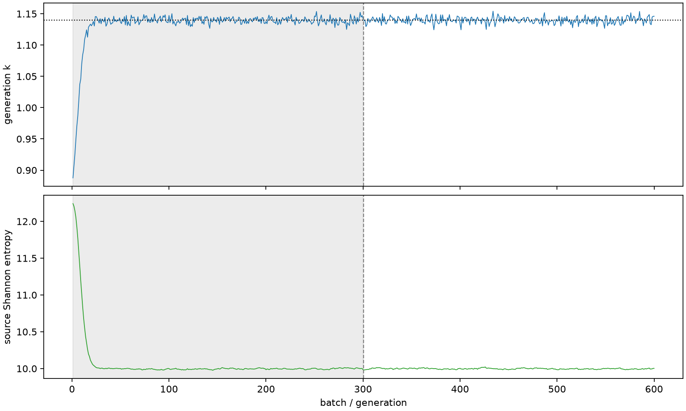

| field | value |
|---|---|
| experiment | V2-ADAPTIVE_01-0010 |
| k | 1.1398159556624616 |
| MC standard error | 0.00019690556533239522 |
| seconds | 923.1113453950384 |
| acceptance | not_assessed |
| convergence | review_required |
Completed is output integrity only; physical and statistical review required. Zero tallies do not prove zero production or zero uncertainty.
| diagnostic | value |
|---|---|
| geometric fuel voxels | 5280 |
| zero fission tally voxels | 1864 |
| low signal fuel voxels | 2952 |
| low signal fission share | 0.00010696530298963904 |
| low signal kappa share | 0.00010699770363972139 |
| important fission share | 0.9501017856340571 |
| previous filter included | 2328 |
| duration estimate s | 1562.5173488400023 |
| actual minus estimate s | -639.406003444964 |
| fission relative MC error | statistics |
|---|---|
| all_geometric_fuel | {"voxels": 5280, "positive_mean_voxels": 3416, "zero_mean_voxels": 1864, "undefined_relative_error_voxels": 1864, "median": 0.05406172106735308, "p95": 0.9339450978236148, "maximum": 1.0000000000000002} |
| low_signal | {"voxels": 2952, "positive_mean_voxels": 1088, "zero_mean_voxels": 1864, "undefined_relative_error_voxels": 1864, "median": 0.5597398799064597, "p95": 1.0, "maximum": 1.0000000000000002} |
| important_95pct | {"voxels": 979, "positive_mean_voxels": 979, "zero_mean_voxels": 0, "undefined_relative_error_voxels": 0, "median": 0.005278071621350947, "p95": 0.009881966706622124, "maximum": 0.010808480740902003} |
| outside_previous_filter | {"voxels": 2952, "positive_mean_voxels": 1088, "zero_mean_voxels": 1864, "undefined_relative_error_voxels": 1864, "median": 0.5597398799064597, "p95": 1.0, "maximum": 1.0000000000000002} |
| kappa_fission relative MC error | statistics |
|---|---|
| all_geometric_fuel | {"voxels": 5280, "positive_mean_voxels": 3416, "zero_mean_voxels": 1864, "undefined_relative_error_voxels": 1864, "median": 0.05398518306486865, "p95": 0.9334794258613143, "maximum": 1.0000000000000002} |
| low_signal | {"voxels": 2952, "positive_mean_voxels": 1088, "zero_mean_voxels": 1864, "undefined_relative_error_voxels": 1864, "median": 0.5599008067996403, "p95": 1.0, "maximum": 1.0000000000000002} |
| important_95pct | {"voxels": 979, "positive_mean_voxels": 979, "zero_mean_voxels": 0, "undefined_relative_error_voxels": 0, "median": 0.005272723317834292, "p95": 0.009867716406032795, "maximum": 0.010795576247722401} |
| outside_previous_filter | {"voxels": 2952, "positive_mean_voxels": 1088, "zero_mean_voxels": 1864, "undefined_relative_error_voxels": 1864, "median": 0.5599008067996403, "p95": 1.0, "maximum": 1.0000000000000002} |
| axial bin | fission share | kappa-fission share |
|---|---|---|
| 1 | 0.22808262852941938 | 0.22807899211622845 |
| 2 | 0.4126687785241903 | 0.41264460899619976 |
| 3 | 0.2570482000820363 | 0.2570522018964036 |
| 4 | 0.06999596195434463 | 0.07001199613979045 |
| 5 | 0.022047664295099183 | 0.02205287698521237 |
| 6 | 0.007023305989425941 | 0.007025011565183882 |
| 7 | 0.0021913625068680984 | 0.002191949544436863 |
| 8 | 0.0006768263621393197 | 0.0006770086532580641 |
| 9 | 0.00019326305209619202 | 0.00019332407551602592 |
| 10 | 5.041365240925163e-05 | 5.043150986840995e-05 |
| 11 | 1.4980920458964258e-05 | 1.4983661513427012e-05 |
| 12 | 5.25035805218585e-06 | 5.2512233656082744e-06 |
| 13 | 1.2381935965569107e-06 | 1.238183822246589e-06 |
| 14 | 1.2557986358025264e-07 | 1.2544920073258142e-07 |
| 15 | 0.0 | 0.0 |
| 16 | 0.0 | 0.0 |
| 17 | 0.0 | 0.0 |
| 18 | 0.0 | 0.0 |
| 19 | 0.0 | 0.0 |
| 20 | 0.0 | 0.0 |
Histories include the inactive-to-active transition at batch 300. kappa-fission approximates fission energy production, not total heat deposition.

